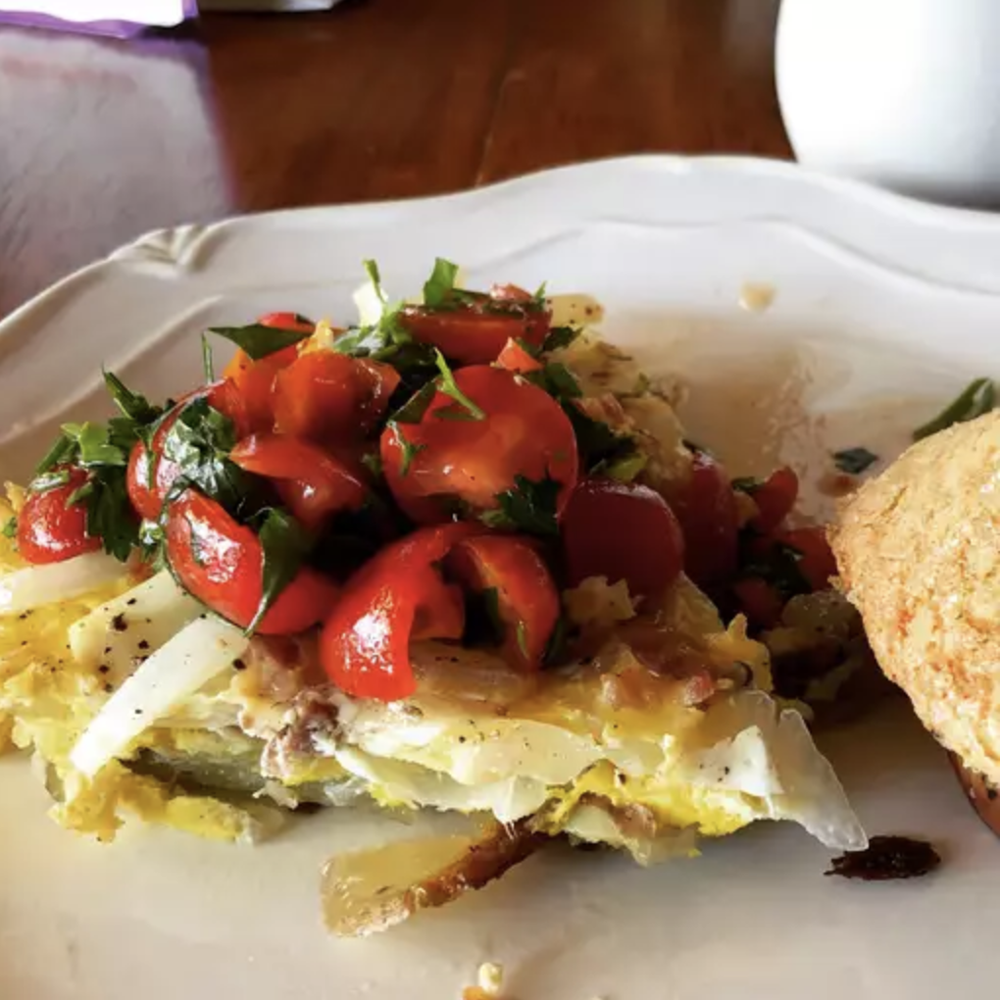

Spanish-Omelette

Description
The distinguishing elements of a Spanish Omelette are their sliced potatoes and onions.
These along with eggs gently cooked in olive oil provides a filling and delicious meal to enjoy.
Ingredients
- 1/2 cup olive oil
- 1/2 lb potatoes thinly sliced
- 1 large onion, thinly sliced
- 4 large eggs
- 2 medium tomatoes peeled, seeded, coursely chopped
- 2 green onions chopped
Steps
- Heat oil over medium-high heat in a large skillet.
Add potatoes and season lightly with salt and pepper;
cook, stirring occasionally, until golden brown and crisp, 10 to 14 minutes.
Add onions; cook and stir until soft and beginning to brown, 6 to 8 minutes.
- Whisk eggs in a bowl; season with salt and pepper.
Pour eggs into the skillet and stir gently to combine with potatoes and onion.
Reduce the heat to low and cook until eggs begin to brown on the bottom, 4 to 5 minutes.
- Loosen omelette with a spatula.
Invert a large plate over the pan, and carefully flip omelette out onto the plate.
Slide omelette, uncooked-side down, back into the pan.
Cook until eggs are set, 4 to 5 minutes.
- Serve warm, garnished with tomato and green onion.
Disclaimer
Picture and recipe on this page are courtesy of:
allrecipes.com
. I take no ownership of the recipe nor picture on this page.
This webpage is simply for personal education purposes.
Please take the time to look at their great website for more recipes.
Or click
here
for my other webpages featuring my favorite foods.